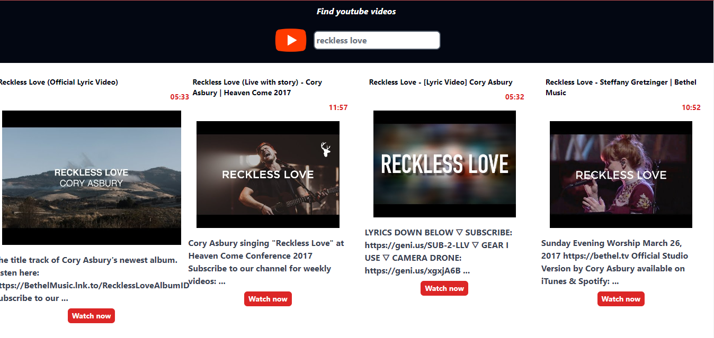
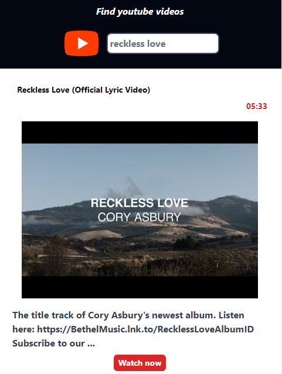

<div class="shadow-lg text-xl font-sans text-light-gray bg-gradient-to-b from-lemon-green via-dark-blue to-dark-blue">
    <div class="p-8 py-48">
        <p class="text-xl md:text-4xl font-sans text-center mb-4 text-dark-blue font-bold">
            Building the Future: YouTube Web App Clone
        </p>
        <div class="flex items-center justify-center mt-4">
            <div class="grid grid-cols items-center">
                <div class="flex items-center justify-center md:justify-start mt-8">
                    
                    
                </div>
                <div class="text-sm md:text-md font-sans p-2 text-justify md:p-8">
                    <div class="grid grid-cols md:grid-cols-2 font-mono">
                        <div class="p-0 md:p-4">
                            <p class="p-2 mt-4">Developing the 'YouTube Web App Clone' project was a valuable learning
                                journey for me. I focused on creating a user-friendly web application that emulates
                                YouTube's real-time search
                                feature. By mastering TypeScript and APIs, I efficiently implemented search algorithms
                                to fetch data
                                from Google and display instant video results.
                            </p>
                            <p class="p-2 mt-4"> Throughout the project, I enhanced my skills in front-end technologies
                                like HTML, CSS, and
                                TypeScript. I also delved into responsive design principles to optimize user experience
                                on
                                various
                                devices.
                            </p>
                            <p class="p-2 mt-4"> This project not only improved my technical abilities but also provided
                                insights into user
                                interaction design and the development of scalable web applications. It reflects my
                                dedication to
                                innovation and the advancement of web technology.
                            </p>
                            <div class="flex justify-center items-center p-2 md:p-8 mt-16 hidden md:block">
                                <button class="p-2 py-2 border-2 border-lemon-green text-white font-bold font-sans rounded-md 
                                     mr-8 md:mr-64 cursor-pointer whitespace-nowrap"
                                    (click)="openVoting('https://github.com/blessedtasela/youtube-video-clone')">
                                    Check out the source code here
                                    <i-feather name="github" class="-mt-1 text-lemon-green" style="width: 30px;">
                                    </i-feather>
                                </button>
                            </div>
                        </div>
                        <div>
                            
                        </div>
                    </div>
                    <div class="flex justify-center p-2 md:p-8 mt-4 block md:hidden">
                        <button class="p-2 py-2 border-2 border-lemon-green text-white font-bold font-sans rounded-md 
                             mr-8 md:mr-64 cursor-pointer"
                            (click)="openVoting('https://github.com/blessedtasela/youtube-video-clone')">
                            Check out the source code here
                            <i-feather name="github" class="-mt-1 text-lemon-green" style="width: 30px;">
                            </i-feather>
                        </button>
                    </div>
                </div>
            </div>
        </div>
    </div>
</div>